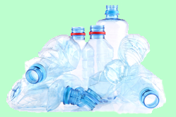

Le plastique PET, abréviation de « Polytéréphtalate d’éthylène », est une matière synthétique de la famille des polyesters, dérivée de gaz naturel et de pétrole. Cette matière se recycle complètement et, en principe, ne perd pas ses caractéristiques fondamentales, ce qui signifie qu’elle peut être utilisée à plusieurs reprises. Le PET est principalement utilisé pour la fabrication des bouteilles à boisson (bouteille d’eau, de boissons gazeuses, de vinaigre, d’huile) mais également pour des flacons ou des bouteilles de shampoing. Ces bouteilles se recyclent indéfiniment pour la fabrication de nouvelles bouteilles en PET ou d’autres produits. Les produits fabriqués à partir de plastique PET doivent donc être jetés dans le bac de tri (poubelle jaune).
